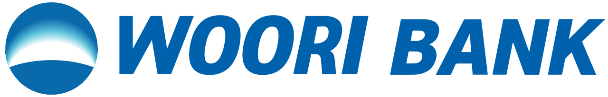

홈 > 브랜드 매거진 > 우리은행
우리은행
우리은행(Woori Bank)은 우리금융지주 산하의 대한민국 시중은행이다.
산업 분야 브랜드·비즈니스 · 공개 등급 자료 기반 · 브랜드 평가 4.2 ★

한눈에 보는 브랜드
우리은행은 1899년 대한제국 황실 자본으로 세운 대한천일은행을 뿌리로 하는 국내 최초의 민족계 은행이다. 식민지기 조선상업은행으로 개편된 한국상업은행과 한일은행이 2001년 한빛은행으로 합쳤고, 2002년 우리은행으로 이름을 바꾸며 브랜드를 통합했다.
이 두 합병과 개명이 정체성을 가른 결정적 전환점이다. 현재는 우리금융지주를 모회사로 둔 그룹의 핵심 자회사로, 2024년 그룹 당기순이익 3조860억원, 2025년 상반기 1조5513억원을 시현하며 한국 4대 금융그룹의 한 축을 이룬다.
브랜드 관점
우리의 가장 큰 숙제는 은행 한 축에 쏠린 수익 구조다. 임종룡 회장 취임 무렵 그룹 순이익의 대부분이 우리은행에서 나왔고, 비은행 기여도는 KB·신한·하나에 견줘 4대 그룹 중 가장 얇았다.
2024년 3조860억원으로 23% 성장하며 회복했지만 같은 해 KB 5조원대, 신한 4조원대, 하나 4조원대와의 격차는 여전했고 리딩금융 경쟁의 승부처가 증권·보험 등 비은행으로 옮겨간 점이 우리에게 불리했다. 그래서 2024년 우리투자증권 출범으로 10년 만에 증권업에 복귀하고, 2025년 동양생명·ABL생명을 인수해 통합 생명보험사를 준비하며 종합금융 퍼즐을 맞췄다.
가계대출 총량 규제가 강해지고 비이자·플랫폼 경쟁이 격화되는 한국 시장에서, 은행 의존을 낮추고 포트폴리오를 다각화하는 이 전환의 성패가 그룹의 다음 순위를 결정할 핵심 변수다.
시작과 성장
우리의 출발은 단순한 은행 설립이 아니라 자주적 금융 주권의 시도였다. 1899년 1월 30일 고종 황제가 자본을 대고 대한제국 관료와 상인 자본가가 주도해 대한천일은행을 세웠다.
외국계 자본이 한반도 금융을 잠식하던 시기에 황실이 직접 출자한 국내 최초의 민족계 은행이라는 점에서 상징성이 컸다. 1909년 최대 주주가 황실에서 탁지부로 넘어갔고, 1912년 조선상업은행으로 개칭되며 식민지 금융기관으로 성격이 바뀐 것이 첫 번째 굴절이다.
광복 후 한국상업은행으로 명맥을 이었고, 1932년 설립된 한일은행과 2001년 1월 합병해 한빛은행으로 다시 태어난 것이 두 번째 분기점이다. 이어 2002년 한빛은행이 우리은행으로 이름을 바꾸며 백 년의 헤리티지를 하나의 브랜드로 묶었고, 2019년 우리금융지주 체제로 재편되며 지주 중심 확장의 토대를 마련했다.
브랜드 아이덴티티
브랜드의 중심에는 '우리'라는 단어가 가진 공동체적 어감이 있다. 1인칭 복수 대명사를 은행 이름으로 쓴 드문 선택으로, 고객과 은행을 하나로 묶는 친밀감을 핵심 가치로 삼는다.
비주얼 아이덴티티는 하나된 '우리'를 뜻하는 원형 심볼과 떠오르는 빛을 형상화한 그라데이션, 신뢰를 상징하는 푸른 계열을 축으로 구성되며, 그룹 전용 서체 우리다움체로 통일감을 더한다. '하늘 아래 첫 번째 은행'이라는 헤리티지를 계승해 가장 신뢰받고 사랑받는 금융이 되겠다는 메시지를 내건다.
타깃은 개인 생활자부터 중소·대기업까지 폭넓으며, 보이스는 권위적이기보다 따뜻하고 동반자적인 어조를 지향한다.
제품과 서비스
우리는 개인금융, 기업금융, 글로벌사업을 세 축으로 한다. 개인 부문은 예적금·대출·자산관리와 카드·외환 등 생활 밀착형 상품을, 기업 부문은 RM 기반의 중소·대기업 여신과 외환·기업금융 솔루션을 제공한다.
글로벌 부문은 해외 영업점 운영과 현지 영업을 담당한다. 채널은 전국 영업점망과 모바일 뱅킹 앱 'WON뱅킹'을 중심으로 한 비대면 플랫폼을 함께 운영하며, 그룹 차원에서 증권·보험·카드 계열사와 연계한 종합금융 서비스로 외연을 넓히고 있다.
현재 상태
우리은행은 우리금융지주를 모회사로 둔 핵심 자회사이며, 그룹은 임종룡 회장 체제로 운영된다. 그룹은 2024년 당기순이익 3조860억원으로 전년 대비 약 23% 성장했고, 2025년 상반기 누적 1조5513억원을 시현했다.
2024년 우리투자증권 출범으로 증권업에 재진출했고, 2025년 동양생명과 ABL생명을 자회사로 편입하며 비은행 포트폴리오를 확대했다. 본사 소재지 등 세부 사항은 미공개.
타임라인
정리된 연도형 이벤트가 없습니다.
BI/CI 변천사
함께 읽을 브랜드
 브랜드·비즈니스 · 편집 검수Citibank
브랜드·비즈니스 · 편집 검수Citibank씨티(Citi)는 미국 씨티그룹이 운영하는 글로벌 소비자·기업 금융 브랜드로, 1812년 뉴욕에서 출발한 시티뱅크 오브 뉴욕을 뿌리로 한다. 빨강 아치가 워드마크 위...
 브랜드·비즈니스 · 편집 검수Deezer
브랜드·비즈니스 · 편집 검수DeezerDeezer는 2023년에 기록된 Designed by Koto 계열의 브랜드 아이덴티티 사례입니다. Koto가 아이덴티티 작업의 디자이너로 기록되어 있습니다. 공개...
 브랜드·비즈니스 · 편집 검수Japan Post
브랜드·비즈니스 · 편집 검수Japan PostJapan Post는 2003년에 기록된 Designed by Landor 계열의 브랜드 아이덴티티 사례입니다. Landor가 아이덴티티 작업의 디자이너로 기록되어...
BO
BOC
브랜드·비즈니스 · 편집 검수BOCBOC는 1967년에 기록된 Designed by Wolff Olins 계열의 브랜드 아이덴티티 사례입니다. Wolff Olins가 아이덴티티 작업의 디자이너로 기록...
Br
Brooklyn Org
브랜드·비즈니스 · 편집 검수Brooklyn Org미국 뉴욕 브루클린의 비영리 커뮤니티 재단으로, 2009년 브루클린 커뮤니티 재단(Brooklyn Community Foundation)으로 출범해 2023년 10월...
Ch
Church
브랜드·비즈니스 · 편집 검수ChurchChurch는 2025년에 기록된 Designed by Porto Rocha 계열의 브랜드 아이덴티티 사례입니다. Porto Rocha가 아이덴티티 작업의 디자이너로...
 브랜드·비즈니스 · 편집 검수Cosmo Oil
브랜드·비즈니스 · 편집 검수Cosmo Oil코스모석유는 일본의 정유·석유 정제 및 주유소 운영 기업으로, 현재 지주회사 코스모에너지홀딩스 산하의 핵심 사업회사다. 가솔린, 경유, 윤활유 등 석유제품의 정제와...
 브랜드·비즈니스 · 편집 검수Fanta
브랜드·비즈니스 · 편집 검수Fanta환타는 코카콜라 컴퍼니가 보유한 과일향 탄산음료 브랜드로, 오렌지를 비롯한 다양한 과일 풍미를 밝고 경쾌한 색감으로 표현하는 것이 특징이다. 1940년 제2차 세계대...